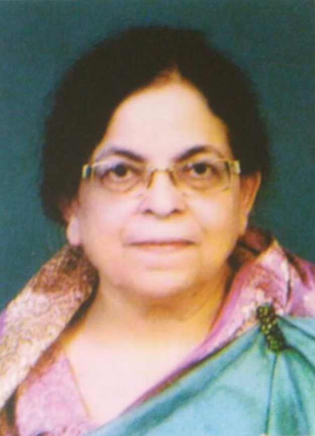

Prof. Quamar Jahan: A Luminary in Urdu Literature

Early Life and Education
Prof. Quamar Jahan, born on May 15, 1948, in the serene village of Buzurgdwar in Darbhanga District, Bihar,
is a
distinguished figure in the world of Urdu literature. Raised by her parents, Late Syed Ata-ul-Haque and Late
Biwi Akhtar Jahan, she completed her early schooling in Barh and attended Bankipore Girls High School in
Patna.
Her academic journey continued at Magadh Mahila College in Patna, where she pursued a Bachelor of Arts in
Urdu
Honours.
Driven by her passion for the Urdu language, she went on to complete her Master of Arts in Urdu from Patna
University and
later earned her Ph.D. from Ranchi University.
Academic and Professional Achievements
Prof. Quamar Jahan's professional career commenced on December 9, 1970, as a lecturer in the Department of
Urdu at
S.M.
College, Bhagalpur. Her dedication and expertise soon led her to the Post Graduate Department of Urdu at
Tilkamanjhi
Bhagalpur University. Over the years, she held prominent positions, including serving two terms as the Dean
of
Humanities and Language and also served as member of the Senate at Bhagalpur University.
Awards and Recognitions
Throughout her career, Prof. Quamar Jahan, has been honored with prestigious awards, including the National
Fellowship Award by the UGC Delhi and the Imtiaz-e-meer by the Fakhruddin Ali Ahmad Memorial Committee in
Lucknow
in 1997.
Literary Contributions
Prof. Quamar Jahan's literary career began with her first story, "Junoon-e-Wafa," published in Subah Nau,
Patna in
1964. Her writings have graced the pages of prestigious Urdu magazines such as Beeswi Sadi, Aajkal,
Aiwan-e-Urdu,
and Shayar Bombay. Since the 1970s, she has been a prominent voice on various radio programs. Over the
years, she
has actively participated in numerous national and international seminars held across India, establishing
herself
as a well-known figure in the Urdu literary fraternity. She is regularly invited to universities as a
subject matter expert and has contributed her expertise on various selection committees.
Notable Works
Short Story Collections:
- Charahgar (1983)
- Ajnabi Chehre (1991 and 2nd edition in 1995)
- Yaadnagar (upcoming)
Criticism:
- Meyar (1988)
- Tanisi Tanqeed - Mumtaz Shirin Se Ahd-e-Hazir Tak (2014)
- Professor Alimullah Hali - Nukush-o-Afkaar (2014)
Academic Works:
- Kalam Abdullah Hafiz Mushkipuri (Tarteeb and Tadween in Urdu) (2008)
- Akhtar Shirani ki Jinsi aur Numaani Shayari (1987) (2nd edition in 2015 published through NCPUL)
- Shakila Akhtar (Monograph), published by Urdu Directorate, Patna (2022)
Other Works:
- Pinjre ka Qaidi (2015)
- Harf-e-Aagehi (2016)
- Kati Patang, translated by Nasra Sharma in Hindi
- Kati Hui Shaakh, part of NCERT Class 10 Urdu syllabus
- Stories published in Istiarah (Magazine), New Delhi
Engagements and Contributions
Prof. Quamar Jahan has been an active participant in numerous national and international seminars, sharing
her
insights and expertise with the Urdu literary fraternity. Her contributions as a subject matter expert have
been
recognized by various universities, and she has served on multiple selection committees, enhancing the
academic
and literary standards in her field.
Her involvement with various societies, including serving as a member of the NCPUL Delhi for two terms and
the
Executive Committee of the Urdu Academy in Patna, showcases her dedication to the promotion of Urdu
literature.
As the Secretary of Anjuman Mata-e-Kalam, she has been instrumental in fostering a community of contemporary
women writers.
Personal Life
Prof. Quamar Jahan was married to the late M.B. Hasan, a Divisional Engineer in Telecom Department of India.
They
had two children, Hasan Perwez and Seema Hasan. Beyond her academic and literary pursuits, she enjoys
writing
stories and critiques, with a particular interest in modern literature. Her remarkable journey in the realm
of
Urdu literature is a testament to her dedication, talent, and passion for the literary arts. Her extensive
body of
work continues to inspire and influence readers and scholars alike.